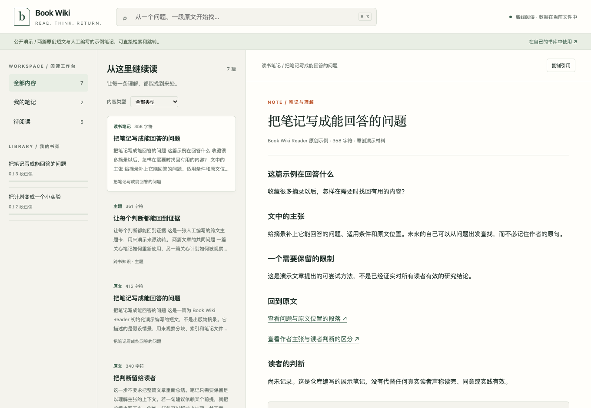

01 READING & KNOWLEDGE
本地阅读工具 / Codex SkillBook Wiki
Reader.
读完以后，
还能找到当时的理解。
把原文、共读笔记和主题线索放在一起。从一个关键词找到笔记，再回到原文核对，让阅读留下可继续积累的知识库。
体验包含原创样文与展示笔记，无需登录。

从阅读笔记，回到文字发生的地方。进入演示
问题
收藏了很多，回看却很难。
原文、摘要、自己的想法混在一起，过一阵就分不清观点从哪里来。
处理方式
让理解保留出处。
原文分块归档，笔记单独保存。检索与来源导航把两者连起来，阅读进度留在本机。
实现边界
工具可以离线，AI 按需接入。
浏览与检索无需模型；AI 共读通过 Codex Skill 进行，独立网页不内置 AI 对话。